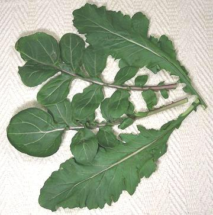

Arugula / Rocket

[Arugula (North America, Australia); Rocket (England); Oruga, Arugula,
Rucula (Spanish); Rucola, Ruchetta (Italian); Roquette (French);
Eruca sativa (mustard family)]
This popular salad green of Mediterranean origin has been used since
at least Roman times. Almost unknown in the U.S. a decade ago it is today
the "must have" green for yuppie salads, so supermarkets stock pre-cut and
washed bags of "baby" arugula. The leaves are small and tender
but have a distinctly mustardy bite, backed by an unusually complex
flavor.
Some varieties have leaves less deeply cut than the photo specimen and
the leaves are very deeply cut on the wild version. In Italy Arugula is
used in soups, but cooked it looses almost all its flavor. The term
"Rocket" is also loosely used for a number of other peppery herbs.
More on Mustard / Cabbage Herbs
Buying:
This herb is now common in markets and farmers
markets serving the yuppie class, and also in many supermarkets in
reasonably affluent neighborhoods. Note: The
largest and most beautiful Arugula I have seen I purchased from Whole
Foods Market in Glendale CA. It was all but unusable, totally lacking
in flavor or any redeeming cultural value.
Storing:
Refrigerate loosely wrapped. This is a very
perishable herb and will start to turn yellow in just a couple of days.
Cooking:
Don't - use it raw in salads - it looses nearly
all flavor and becomes mushy when cooked (though some ethnic recipes do
call for it cooked).
hb_aruguz 090524 - www.clovegarden.com
©Andrew Grygus - agryg@clovegarden.com - Photos on this
page not otherwise credited are © cg1 -
Linking to and non-commercial use of this page permitted.